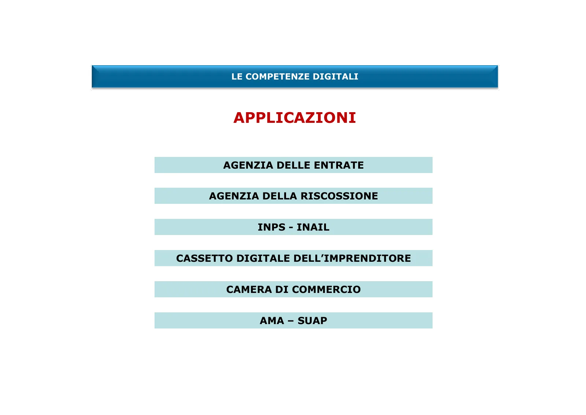
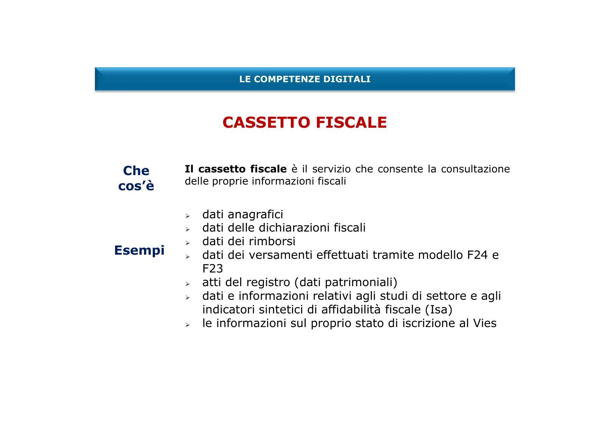
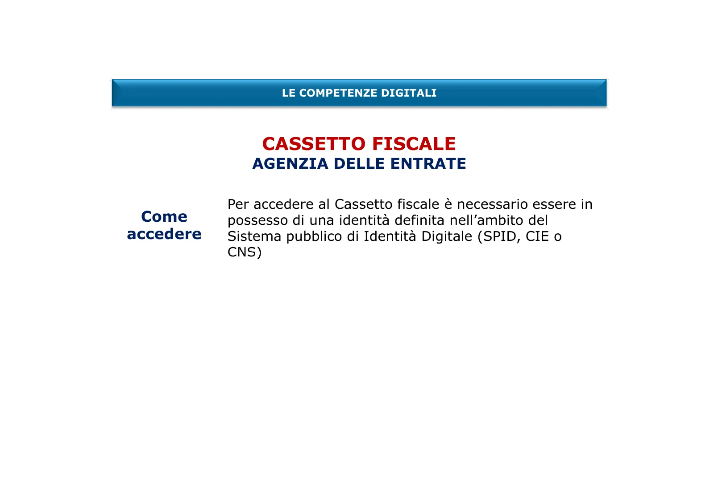
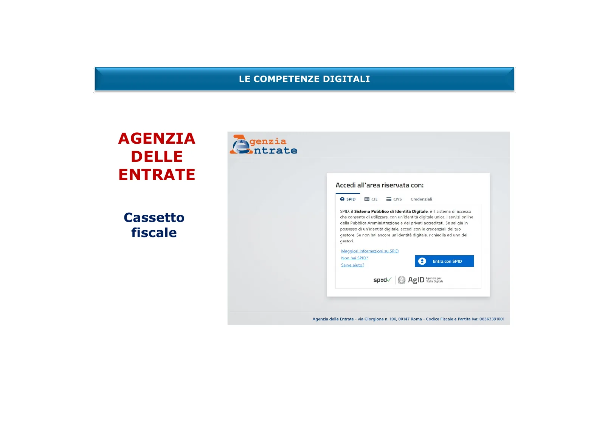
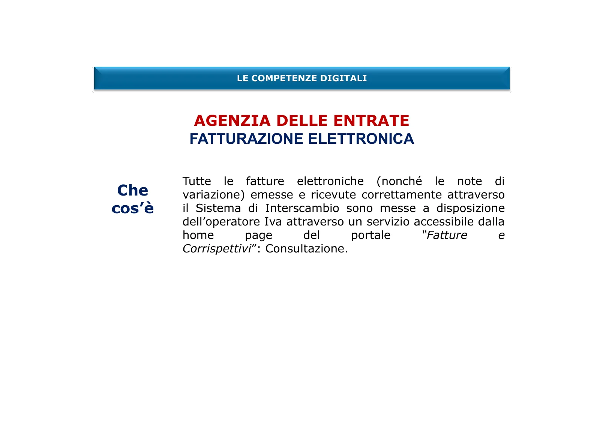
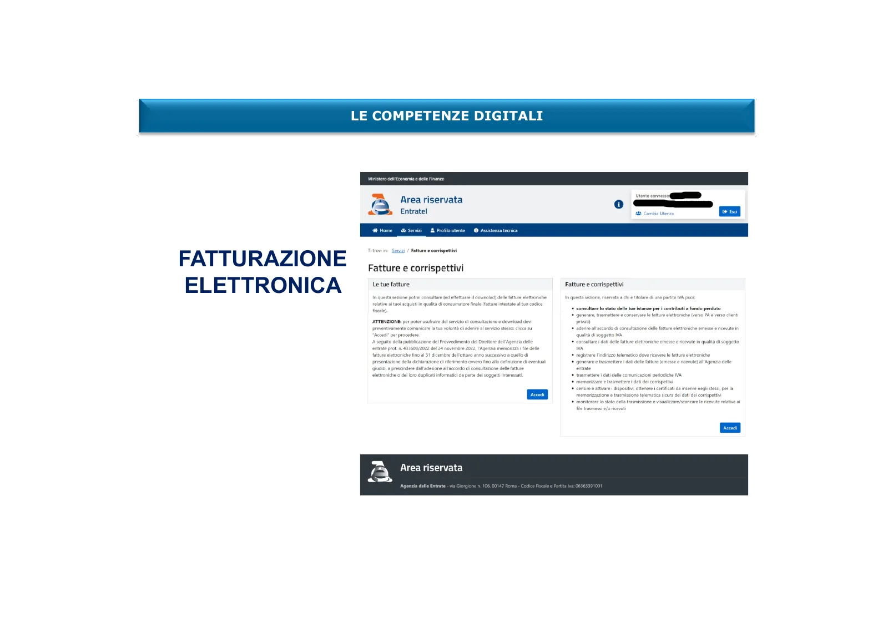
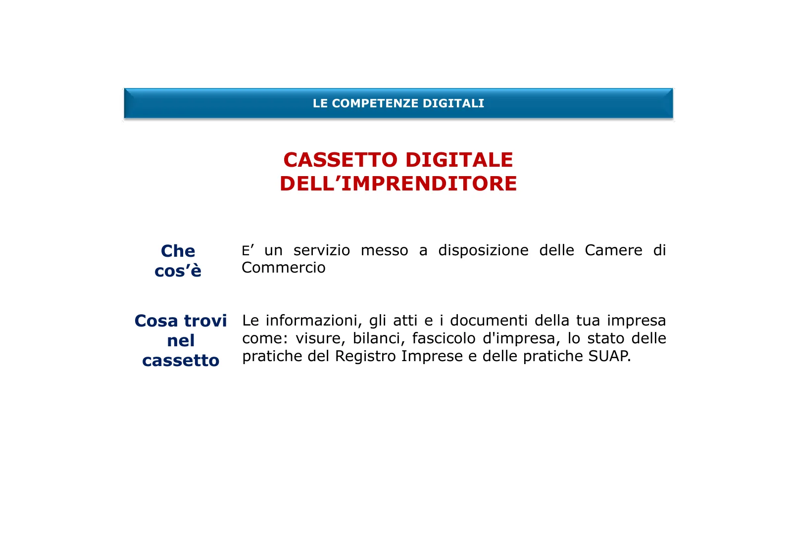
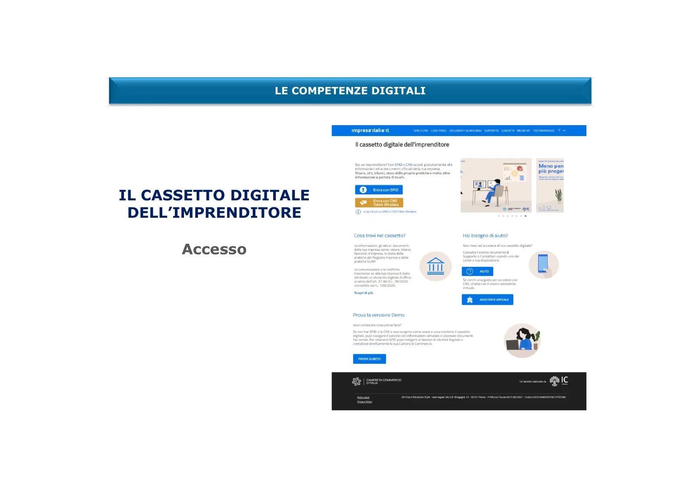

Parte B · gio 12 novembre · seconda metà (1h10) · 8 slide originali · 7 integrazioni essenziali + 4 facoltative
Fisco, fatture e Camera di Commercio online
Seconda parte: le slide originali 10–17 su portali dell’impresa, cassetto fiscale, fatturazione elettronica e cassetto digitale dell’imprenditore, con simulazioni ed esercizi.
Le slide del modulo · le slide originali sono intatte, quelle con l’etichetta colorata sono integrazioni
UD12 · Competenze digitali · Incontro 2 di 4 · giovedì 12 novembre 2026 · 3 ore online · parte B
Fisco, fatture e Camera di Commercio online
Cassetto fiscale, fatturazione elettronica e cassetto digitale dell’imprenditore: dove trovare i dati della propria impresa e come si emette una fattura elettronica.
Slide originali UD12 · 10–17+ simulazioni ed eserciziDocente: Ing. Antonio Adinolfi
Il commercialista vi chiede la visura e gli F24 dell’anno scorso. Dove li prendete?
Fra mezz’ora sapremo rispondere in meno di cinque minuti, senza fare code.

APPLICAZIONI AGENZIA DELLE ENTRATE AGENZIA DELLA RISCOSSIONE INPS - INAIL CASSETTO DIGITALE DELL’IMPRENDITORE CAMERA DI COMMERCIO AMA – SUAP
Quale portale usate per…

CASSETTO FISCALE Che Il cassetto fiscale è il servizio che consente la consultazione delle proprie informazioni fiscali cos’è dati anagrafici dati delle dichiarazioni fiscali dati dei rimborsi Esempi dati dei versamenti effettuati tramite modello F24 e F23 atti del registro (dati patrimoniali) dati e informazioni relativi agli studi di settore e agli indicatori sintetici di affidabilità fiscale (Isa) le informazioni sul proprio stato di iscrizione al Vies

CASSETTO FISCALE AGENZIA DELLE ENTRATE Per accedere al Cassetto fiscale è necessario essere in Come possesso di una identità definita nell’ambito del accedere Sistema pubblico di Identità Digitale (SPID, CIE o CNS)
Accedere da soli o delegare
Accesso diretto
SPID, CIE o CNS (Carta nazionale dei servizi).
Area riservata dell’Agenzia delle Entrate: cassetto fiscale, Fatture e Corrispettivi, dichiarazioni precompilate.
Delega all’intermediario
Il commercialista può consultare il vostro cassetto fiscale con una delega.
La delega si conferisce online dall’area riservata e si può revocare.
Delegare non vuol dire smettere di controllare: date un’occhiata ogni mese.

AGENZIA DELLE ENTRATE Cassetto fiscale
Caccia al dato nel cassetto fiscale (simulato)

AGENZIA DELLE ENTRATE FATTURAZIONE ELETTRONICA Tutte le fatture elettroniche (nonché le note di Che variazione) emesse e ricevute correttamente attraverso cos’è il Sistema di Interscambio sono messe a disposizione dell’operatore Iva attraverso un servizio accessibile dalla home page del portale “Fatture e Corrispettivi”: Consultazione.
Il viaggio di una fattura elettronica
1CompiloCon un software o con il servizio gratuito dell’Agenzia: file XML.
2Invio allo SdIIl Sistema di Interscambio controlla dati e formato.
3Scarto?Se ci sono errori arriva la notifica di scarto: la fattura è come non emessa.
4RecapitoAl codice destinatario o alla PEC del cliente; altrimenti nell’area riservata.
5ConservoConservazione digitale a norma (anche gratuita con l’Agenzia).
Dal 1° gennaio 2024 la fatturazione elettronica è obbligatoria anche per i forfettari (D.Lgs. 127/2015; L. 205/2017; art. 18 DL 36/2022). Un PDF inviato per email non è una fattura elettronica.

FATTURAZIONE ELETTRONICA
Compilate, inviate allo SdI, leggete l’esito
Dubbi frequenti

CASSETTO DIGITALE DELL’IMPRENDITORE Che E’ un servizio messo a disposizione delle Camere di cos’è Commercio Cosa trovi Le informazioni, gli atti e i documenti della tua impresa nel come: visure, bilanci, fascicolo d'impresa, lo stato delle cassetto pratiche del Registro Imprese e delle pratiche SUAP.
Il cassetto digitale dell’imprenditore
📄
Visura e atti
Visura camerale, statuto, atti depositati: scaricabili gratuitamente dal titolare.
📊
Bilanci e fascicolo
Bilanci depositati e fascicolo d’impresa.
🔄
Pratiche
Stato delle pratiche al Registro Imprese e al SUAP.
Si accede da impresa.italia.it con SPID o CIE. È gratuito per il titolare o il legale rappresentante.

IL CASSETTO DIGITALE DELL’IMPRENDITORE Accesso
Laboratorio finale (40 minuti): il calendario digitale dell’impresa
Consegna
In un calendario digitale create gli eventi ricorrenti: controllo della PEC (ogni giorno), cassetto fiscale (ogni mese).
Aggiungete le scadenze: rinnovo PEC, scadenza del certificato di firma, canone SPID se previsto.
Nel foglio di calcolo della Incontro 1 aggiungete una scheda «Strumenti digitali» con gestore, scadenza e costo.
Aggiornate la bacheca Kanban del progetto.
Controllo
Ho un promemoria per ogni scadenza?
So dove trovo visura, F24, fatture?
So che cosa fare se una fattura viene scartata?
Le ricevute PEC sono archiviate nella cartella giusta?
Checkpoint della Parte B
Cassetto fiscale: dati, versamenti, dichiarazioni; accesso con SPID, CIE o CNS.
La fattura elettronica passa sempre dallo SdI ed è un file XML.
Codice destinatario di 7 caratteri; 0000000 quando manca.
Una fattura scartata è come non emessa: si corregge e si reinvia.
Cassetto digitale: visura, atti, bilanci e pratiche, gratis per il titolare.
Con la presentazione selezionata: →spazio avanti · ← indietro · F schermo intero · N note · O indice · L laser · B schermo nero · numero + Invio per saltare. Nelle simulazioni usate mouse o dito: i tasti funzionano di nuovo appena cliccate fuori dai campi.
Note del docente
Scaletta · gio 12 novembre · seconda metà (1h10) · lezione online
Come si distribuisce il tempo
2:00Slide 10: quale portale per quale servizio
2:10Slide 11–13: cassetto fiscale simulato, «caccia al dato»
2:25Slide 14–15: il viaggio della fattura e la simulazione di invio allo SdI
2:45Slide 16–17: cassetto digitale; checkpoint
2:52Test delle due parti
Verifica formativa · 10 domande · soglia 7/10
Test di fine parte
Le opzioni compaiono in ordine casuale. Con almeno 7 risposte corrette si apre la verifica finale dell’incontro.